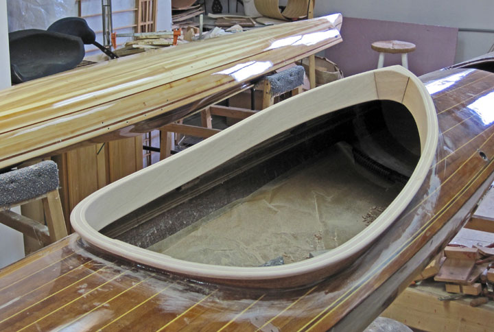
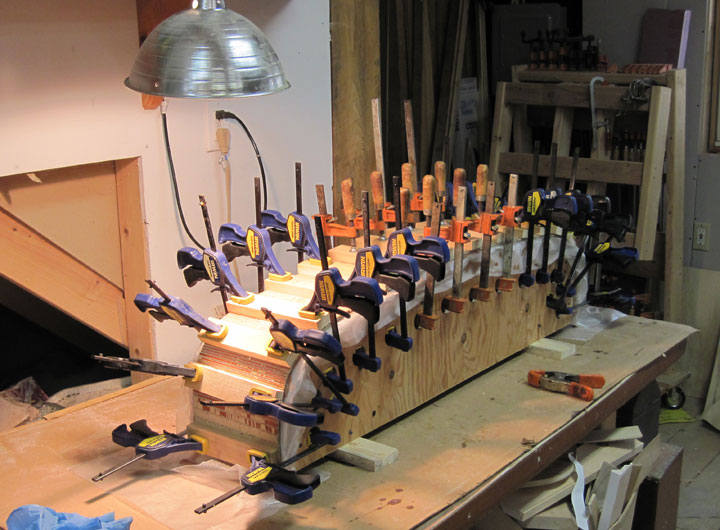

Dark Star sea kayak 15' 6" long x 21" wide, 29 pounds.
Dark Star sea kayak
Dark Star sea kayak
Singer Project - as of - 5/27/12
Sanding the completed cockpit coaming

Sanded coaming ready for 5 coats of epoxy.
Coaming coated with epoxy.
Outrigger floats under construction.
Outrigger floats get fiberglass sheathing.
Outrigger floats glassed and decked.

Outrigger arm assembly made of 10 layers of mahogany veneers is glued -up.
Outrigger arm and floats are laid out with kayak for preliminary measurements.
Kayak first coat of varnish ready for lettering.
Stern view, kayak first coat of varnish, ready for lettering.
"Miss Guided" lettering done and varnished.
Outriggers set-up under construction.
Outrigger set-up under construction.
Outrigger set-up under construction.
Outrigger set-up under construction.
Sea Trials on out pond. Detail of outrigger set-up with empty boat.
Sea Trials. Boat loaded, stern view.
Sea Trial side stern view.
Sea Trial Side front view. Trim and placement good. No paddle interference with outriggers. Sea Trials a success!
Outrigger system in final epoxy coatings stage, prior to finish sanding and varnishing.
Side View Outrigger System May 11, 2012
Detail of Outrigger System with bolt down knobs for securing outriggers to kayak deck.
Stern view Outrigger System.